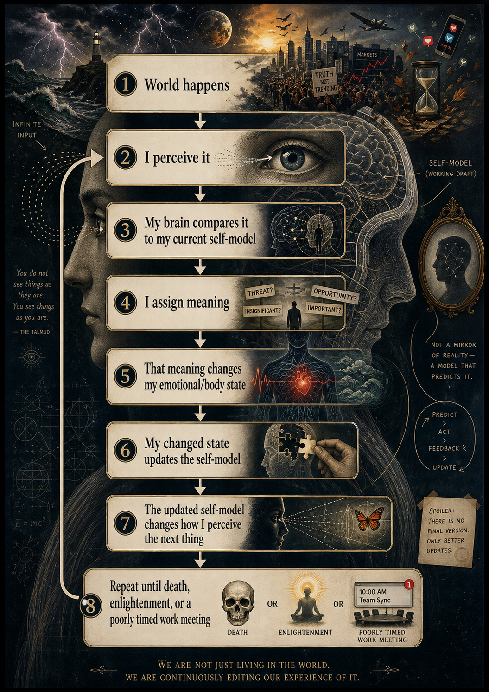

§ Abstract
This paper proposes the Mid-Process Identity Loop, an original conceptual model of identity continuity within conscious experience. The model argues that the experience of being a continuing self is not a fixed inner object, but a recursive, self-updating process in which incoming reality is compared against a live self-model composed of memory, prediction, emotion, bodily state, social feedback, values, defenses, and narrative identity. Meaning emerges through that comparison. Emotional and bodily responses then feed back into perception, behavior, memory, and future interpretation.
This updated paper narrows the original Mid-Process Consciousness Loop from a broad account of consciousness to a bounded model of identity-continuity within conscious experience. It also introduces the Continuity Engine v0.4.1-alpha, a rule-based narrative-analysis prototype that operationalizes the theory through eight scored dimensions, eight loop-state labels, adversarial regression tests, and an inter-rater reliability pipeline.
The software artifact is not a diagnostic instrument and is not externally validated. It is a research prototype designed to test whether identity-relevant language can be coded consistently across human raters and compared with rule-based classification.
1. Introduction
Human beings often speak about identity as if it were a completed object. A person says, "This is who I am," "I know myself," or "That is not me," as though the self were a finished structure hidden somewhere inside the mind. This language is useful in daily life, but it is misleading. Human experience does not behave like a finished object.
People revise themselves constantly. They change beliefs after new evidence, reinterpret memories after emotional shifts, behave differently under threat or belonging, and experience the same event differently depending on what it seems to mean about them. Even memory is not simple retrieval; it is reconstruction. The self is not merely stored. It is continually regenerated.
The Mid-Process Identity Loop proposes that identity is the temporary continuity produced by recursive self-model updating. A person remains recognizable not because they do not change, but because the system maintains pattern continuity while constantly revising. The person is always mid-process: being shaped while interpreting what is shaping them.
2. Scope and Boundary Conditions
The model is intentionally bounded. It does not claim to explain all consciousness, basic wakefulness, raw sensation, or the metaphysical hard problem. It addresses personal identity within conscious experience.
| This Model Addresses | This Model Does Not Claim to Explain |
|---|---|
| Identity continuity | All consciousness |
| Self-model updating | Qualia or raw sensation |
| Narrative revision and self-interpretation | The hard problem of consciousness |
| Language patterns that reveal loop state | Clinical diagnosis or mental health assessment |
| Testable coding of identity-relevant text | A complete neuroscientific theory |
3. Background
Coppola and colleagues (2026) examined functional brain dynamics while participants listened to the same naturalistic audio stimulus during wakefulness and anesthesia. They report that attention and sensory networks showed more shared structure during conscious processing of the story, while default mode network dynamics became more individual-specific and complex in consciousness.
This evidence does not prove the Mid-Process Identity Loop. It does support a distinction the theory depends on: people can process a common external world while generating individualized meaning through memory, self-reference, and prediction.
The default mode network should not be equated with "the self." That would be cartoon neuroscience, and we have enough cartoons with credentials already. Instead, it is better treated as one network among several involved in autobiographical, self-referential, and internally oriented cognition.
4. Core Thesis
Human identity is the temporary continuity generated by recursive self-model updating. Incoming reality is compared against a live self-model. That comparison produces meaning. Meaning alters emotional and bodily state. Emotional and bodily state influence behavior, perception, and memory. Feedback from the world, the body, and other people is then integrated, rejected, distorted, defended against, delayed, split, or used to revise the self-model.
Identity is continuity under revision.
5. The Self-Model
The self-model is the active internal representation of "me" through which experience becomes personal. It is not a perfect map. It is an adaptive, protective, biased, historically shaped working model.
| Component | Function in the Self-Model |
|---|---|
| Memory | Provides continuity, reference points, and reconstructed personal history. |
| Prediction | Anticipates what may happen next and what it may mean. |
| Emotion | Assigns urgency, threat, value, shame, relief, or importance. |
| Bodily state | Contributes sensation, arousal, fatigue, hunger, pain, safety, or threat. |
| Social identity | Tracks role, belonging, rejection, status, expectation, and recognition. |
| Narrative | Creates a coherent story of who the person is and why events matter. |
| Values | Filters what matters and what threatens integrity. |
| Defenses | Protect continuity when input feels destabilizing. |
A belief may be false and still structurally load-bearing. Remove it too quickly, and the person may not feel liberated; they may feel destabilized. This is why facts alone often fail to change people. Facts do not enter an empty mind. They enter an architecture with load-bearing stories, defenses, and prior predictions.
6. The Mid-Process Identity Loop
The proposed loop is a continuous recursive sequence. The self-model does not merely respond to experience after the fact; it shapes experience while experience is happening.

7. Meaning Assignment
Meaning assignment is the conversion point where shared reality becomes individual experience. A person does not simply ask, "What happened?" The self-model asks, often faster than conscious language can follow: What does this mean about me? Am I safe? Am I failing? Have I seen this before? Does this confirm or threaten who I think I am?
A supervisor says, "Can we talk about this report?" One person hears an invitation to improve the work. Another hears that they are in trouble. Another hears that they are not trusted. Same sentence, different self-model, different body response, different behavior, different update.
8. Emotional and Bodily Response
Bodily state is not secondary decoration. It becomes part of the next input. Fear changes perception. Shame alters memory access. Anger narrows interpretation. Grief changes time. Anxiety turns ambiguity into threat. Confidence makes uncertainty survivable.
In the Continuity Engine, bodily distress is treated as an auxiliary marker rather than a separate scored dimension. It raises threat weighting, can contribute to fragmentation when cognition and body conflict, and can contribute to overload thresholds when agency and meaning collapse.
9. Loop States
The Mid-Process Identity Loop can operate in several functional states. These states describe patterns in the loop, not permanent traits in people.
10. The Continuity Engine v0.4.1-alpha
The theory is now paired with a software artifact: a rule-based narrative-analysis prototype published as a public GitHub repository.
The current release reports 60/60 pilot accuracy, 20/20 adversarial regression accuracy, and 92 passing unit tests. These results demonstrate internal consistency and regression stability, not external validation.
from continuity_engine import analyze_text
result = analyze_text("I was frustrated, but I can see why the change was needed.")
print(result.loop_state) # "Flexible"
print(result.confidence) # "Medium"
print(result.scores) # {"self_reference": 1, "identity_fixity": 0, ...}11. The Eight Scored Dimensions
Each dimension is scored from 0 to 3. Auxiliary markers — sarcasm, boundary-setting, accountability, bodily distress, rumination, weaponized evidence, third-person self-distance, and unresolved resolution — influence classification without becoming separate scored dimensions.
12. Discernment, Defense, and the Data Baseball Bat
A central refinement is the distinction between healthy rejection and defensive rejection. A person can reject a claim because the evidence does not support it, while still integrating part of the feedback. That is discernment. A person can also use the language of evidence to attack the source or preserve a threatened self-story. That is weaponized evidence — also known as the Data Baseball Bat, because apparently even spreadsheets can become blunt-force instruments.
| Pattern | Loop Interpretation |
|---|---|
| "The data does not support that conclusion, but I can fix the chart labels." | Flexible / evidence-based discernment |
| "The data proves they are incompetent and anyone who disagrees is stupid." | Defensive / weaponized evidence |
| "I do not accept being called lazy, but I take responsibility for the deadline." | Flexible / boundary-based discernment |
| "They are just wrong and I do not care what they said." | Defensive / feedback rejection |
17. Limitations
| Limitation | Why It Matters |
|---|---|
| Conceptual status | The theory is original and not yet externally validated. |
| Synthetic pilot data | The current 60-sample dataset tests internal consistency, not generalization. |
| Rule-based method | Regex markers cannot reliably infer deep context, tone, negation, culture, or intent. |
| English-language bias | Marker patterns are US-English dominant. |
| Label risk | Terms like Defensive, Rigid, and Overloaded can stigmatize if applied to people rather than text patterns. |
| No diagnostic authority | The model does not assess mental health, character, competence, or worth. |
18. Ethics and Usage Policy
The model and software classify language patterns, not people. A text can show a defensive pattern without the writer being a "defensive person." The distinction is not decorative. It is the ethical floor.
| Acceptable Use | Unacceptable Use |
|---|---|
| Self-reflection by the writer | Evaluating employees, students, or patients |
| Anonymized and consented research coding | Ranking or scoring people by loop state |
| Methodology testing and rubric development | Clinical diagnosis or treatment planning |
| Aggregate analysis with safeguards | Surveillance or coercive monitoring of writing |
20. Conclusion
The Mid-Process Identity Loop offers a framework for understanding human beings as recursive, self-updating systems. It challenges the everyday assumption that identity is a fixed inner object and instead proposes that the self is produced through ongoing revision.
The Continuity Engine v0.4.1-alpha gives this theory its first operational form. It does not validate the theory by itself. It gives the theory a test bench: a way to turn claims about identity revision into coded language patterns, human rater tasks, adversarial examples, and reliability metrics. That is the difference between a metaphor and a research program.
The self is not the product. The self is the process that keeps producing itself.
§ References
Clark, A. (2013). Whatever next? Predictive brains, situated agents, and the future of cognitive science. Behavioral and Brain Sciences, 36(3), 181–204.
Coppola, P., Allanson, J., Naci, L., et al. (2022). The complexity of the stream of consciousness. Communications Biology, 5, 1173.
Coppola, P., Owen, A. M., Menon, D. K., Naci, L., & Stamatakis, E. A. (2026). The neural correlates of shared and individual experience. Communications Biology, 9, 95.
Coppola, P., & Stamatakis, E. A. (2026, May 1). How individual consciousness works—and makes us unique. The Conversation.
Friston, K. (2010). The free-energy principle: A unified brain theory? Nature Reviews Neuroscience, 11, 127–138.
Laird, A. (2026). Continuity Engine: A Rule-Based Narrative Analysis Framework (Version 0.4.1-alpha) [Software]. GitHub.
McAdams, D. P. (2001). The psychology of life stories. Review of General Psychology, 5(2), 100–122.
Metzinger, T. (2009). The Ego Tunnel: The Science of the Mind and the Myth of the Self. Basic Books.